Chapter 1
Steinitz’s Elements
1.1 Introduction
In present-day chess, every self-respecting player uses a computer with the most popular chess programs. Besides the known databases, in which millions of games can be found, most chess fans use strong engines to scrutinize their own games.
Ever since Kasparov lost his match with Deep Blue and Kramnik went down in a match with Deep Fritz, it looks as if humankind has definitely lost the battle with the machine. According to the Dutch grandmaster and columnist Hans Ree, this is a blessing for chess. ‘We human beings are finally on our own again’, he once quipped with great satisfaction.
This book is all about the question with which every club player and tournament shark is struggling: the opening is over – how to continue the game?
As long as we don’t play against computers, we can permit ourselves to make (tactical) mistakes. At club level, but also in the international tournament arena, nobody is capable of turning out a perfect game. And this is just as well, since that’s what makes our game so exciting and fascinating. Precisely at such moments, when the mistakes crop up, the game is all about outwitting your opponent.
How do games develop in general? After the opening a struggle unfolds where the main purpose is to play your pieces to good squares. But which squares are good? And how do we determine this?
Several times in the game – of course, depending on the type of position we find ourselves in – concrete calculation is needed, and we have to take stock of the tactical motifs. But in a substantial part of the game there is nothing concrete to calculate, and we have to try to improve our position. Precisely for those cases, we must accumulate a certain amount of understanding of how to go about this. In this book we offer a guideline for making well-considered choices in this area.
Of course, we should not forget that strategy and tactics are inextricably bound up with each other. I myself am known as a strategist, but to my detriment I have to confess that I spoil many a beautiful position by tactical mistakes. At such moments the fate of a chess player is cruel. In a game you have made 39 great moves, and then you produce one disgustingly bad one – in such cases you curse yourself for ever having given in to this addiction…
Fortunately, many chess players have a selective memory – they mainly remember their great achievements and banish their horrible blunders from their memory.
1.2 Opening theory
The importance of opening theory is grossly overestimated. Obviously, the knowledge of opening moves comes in handy when setting up a chess game, but this knowledge alone does not bring universal happiness. After this you still have to play chess, and for that other things will require attention.
Six-time Dutch champion GM Loek van Wely gave his opinion on this subject in an interview with the Dutch chess promoter Karel van Delft in 1996: ‘With many Dutch youth players, opening knowledge is heavily over-developed. It is better for them to gain more understanding in the middle- and endgame by studying chess books. This irritates me now and then. They know all kinds of opening variations. It’s as if they are reciting a lesson. And as soon as it’s time to play real chess, they often understand nothing from this opening. Take the Sveshnikov Sicilian. Even with my rating, I hardly understand it. It would be better for them to study the Dragon or the King’s Indian. They can learn something there. I only started to study openings seriously when I had a 2400 rating.’
The entire interview can be read in the interesting book with the title Developing chess talent, published by Karel van Delft and his son, IM Merijn van Delft, in 2010.
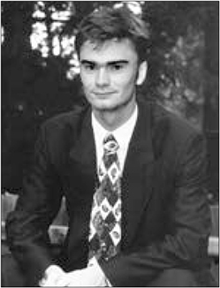
Loek van Wely
Also the famous Russian chess trainer Mark Dvoretsky expressed similar sentiments about this craving for opening knowledge. In the book The Chess Instructor 2009 (New In Chess), he writes: ‘A chessplayer should not become a slave of his opening knowledge’. He analyses a game between the Dutch players Ted Barendse and the then 18-year-old Merijn van Delft (now a good IM). In his observations on this game Dvoretsky points at the following: ‘the opening moves were made at the level of the leading grandmasters in the world. But as soon as knowledge came to an end, there promptly followed some ridiculous mistakes. So how should a young player proceed further: continue to perfect his opening repertoire, or nevertheless switch to other problems?’ If even such a successful coach addresses us like this, who are we to turn a deaf ear to such advice?
Yet, many (young) players cannot be convinced of this. And this is understandable. With the current computers and advanced tools you can spend quite a lot of time on openings. The subject matter is concrete, and you will quickly get the feeling that you are doing useful work. But, as said, its use is quite relative. Still, what is the alternative? What should you do to get better? As there is no ready-made answer to this question, most players continue on the chosen path.
This book aims to take another course. Our intention is to enhance the understanding of the reader. Questions like ‘How do I devise a plan?’ or ‘What are the characteristic features of this position?’ play the most important role here.
Experience teaches us that the player who understands the position best, has the greatest chance to end up the winner. A good player who is surprised in the opening often still manages to save himself from the hornets’ nest he finds himself in, because he knows what he should look for.
In this book we devote attention to the treatment of the middlegame. We lay emphasis on determining the strategic characteristics of the position. Many treatises have already been written on the diverse aspects of the middlegame; however, not much has been written about the essence of positional play.
In the former Soviet Union, the importance of such an approach was recognized. Attempts were made to dissect the middlegame into its characteristic features, so as to offer guidelines which the chess student could turn to profit. My many years’ work as a trainer also made me realize that in chess there was a demand for structured material on strategy. A club player who wants to improve his chess, wants to know what he should look for. The difference with a strong player is almost always a matter of orientation. The stronger player, as a rule, knows unerringly which features in a position play an important role and which do not. In this book we will study these various characteristic features of the middlegame deeply.
1.3 Tactics and strategy
If you open out a newspaper to read a soccer report, nowadays you encounter an increasing amount of jargon that is hardly understandable for an outsider. The language used when discussing tactical concepts seems directed to insiders only. Catchphrases like ‘positional play was sloppy’ or ‘the home side played with no less than eight players behind the ball, giving away too much space’, are of the order of the day. Also ‘the second ball was always for the away side’ will sound strange to the ear of an outsider. A non-soccer fan will at the very least scratch his head when reading such phrases…
The tactical concept plays an important role in sports in general, and in present-day soccer especially. Actually, for a chess player the term ‘tactical concept’ is misleading. With tactics we think of combinations. But when a soccer coach talks about tactics, he means the strategy he wants to pursue in order to outsmart his colleague in the dug-out. The coach’s brainwork – which ‘puppet’ is put in which place, and which assignment is given to the ‘puppet’ – is of a purely strategic nature in chess terminology. What is more, in chess we can also see the player himself as a kind of coach. For he is the one who determines which puppet goes where. Contrary to soccer, in chess the player has the undeniable advantage that while the battle is raging, he can make his men do exactly what he wants. The soccer coach must do most of his work before the game. During the game he can hardly exert any influence on the way in which his men carry out their assignments.
In the parallel I have drawn between soccer and chess, there is one essential similarity in the brainwork that has to be done. Both the (soccer) coach on one side and the chess player on the other have to possess a sound understanding of the game, which we can describe more specifically as ‘positional feeling’. Without positional feeling, good results can hardly be achieved in either discipline. We shall try to specify this term ‘positional feeling’ further, in order to see which variables are involved, and how we can exert influence on them. In the following I shall restrict myself to the game of chess. Not that I don’t have a clue about soccer. I am one of the sixteen million national coaches in the Netherlands…
Positional play is essentially about directing your pieces to the right squares. The question of what are the right squares, is not easy to answer. However, we can establish an elementary principle: the purpose of the game is to give mate, and so we will have to set up our pieces in such a way that mate is a logical consequence.
The experienced player will now shake his head pityingly: ‘No, we cannot paint such a simplified picture of the game.’ I will be the last to deny this, but sometimes it is good to return to the essence, in order to be able to see things in a different perspective.
For example, the advanced player cannot deny that the material superiority of one meagre pawn will sometimes suffice to convert a game into a win. If the opponent does not have compensation for this material disadvantage, the player will convert this pawn into a new queen, with which he will eventually be able to give mate.
1.4 Compensation
Inadvertently, we have tracked down an important concept: compensation. And with that we arrive at Wilhelm Steinitz, the first official World Champion, who laid the foundations for present-day strategy. In short, his theory amounts to the following.
According to Steinitz, the starting position is balanced. But every move must meet the demands of the position. If a player makes a mistake, he commits a sin against a certain principle, and the balance will be tipped in favour of the opponent. According to Steinitz, it is necessary to collect small positional advantages, which must be turned into other advantages. Steinitz labels the player who has obtained a certain advantage as ‘the attacker’. He claims that this player must try to convert this advantage into other advantages, until he has won the game. So he does not mean the ‘attacker’ in the classical sense of the word, but rather the player who has to do something with his positional advantage.
It all amounts to the idea that if a player has to make a concession to a strategic principle, he must search for compensation for this in one way or another. If this compensation is lacking, then, according to Steinitz, even one single strategic advantage will be sufficient to tip the balance decisively.
1.5 Steinitz’s Elements
A positional assessment is formed by correctly pointing at the features of the position. Each position has various features, and the trick is to discover (or distinguish) what is important and what is not.
A strong player often has an excellent idea of the factors he should take notice of and which moves he must consider. Have you never been surprised at how quickly a simultaneous player makes his rounds? Usually he needs just a few seconds to familiarize himself with the position, and he will make the good moves quite automatically. In this book we will try to offer you guidelines with which you can find the characteristic features of a game as well. So, it is all a question of good orientation in order to find your way in apparently impenetrable jungles.
In his analyses, Wilhelm Steinitz, the first official World Champion, put a number of these features into words and formulated them in a kind of set of rules. Today his ‘formulae’ are still valid.
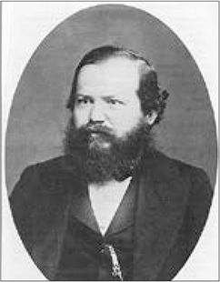
Wilhelm Steinitz
In doing this, Steinitz did ground-breaking work without actually knowing it. But to my knowledge, Steinitz never managed to make a logical list. One of his successors, Emanuel Lasker, realized the importance of the middlegame principles that Steinitz had discovered. With their help, he established a table, which he labelled ‘Steinitz’s Elements’ (see below). So Lasker gave his illustrious predecessor all the credit – and laid the foundation for present-day chess strategy!
A few explanatory words may be of use here. In the above table, purely strategic features are considered. From practice, we know that in the game of chess, tactics often play first fiddle, but that does not mean that it is wrong to list all the possible strategic features. Actually, all possible features in a position can be more or less reduced to these elements.
If we are capable of dissecting a position into its strategic elements, then we automatically have the right orientation, and this should allow us to find the right plan in a game. In the former Soviet Union (and also in other Warsaw Pact countries), training was very much concentrated on the above-mentioned elements, and this may explain why (former) Soviet players are still so enormously strong. They are capable of ‘reading’ a position at one glance, because they track down the important features, dismiss the unimportant ones and choose the right path on that basis. A second aspect connected with this table should be discussed. The term ‘permanent’ is used in a relative sense. If, for instance, a player possesses the bishop pair, then in a number of cases he will abandon it at the right moment – to liquidate to an endgame that is winning for him, for example. Or to convert it into another advantage, like a surplus in material. From this we can conclude that a permanent advantage can also be quite temporary.
The ‘temporary advantages’ are of an even more transitory nature. A piece that is out of play can sometimes rejoin the battle within two moves, in which case this (temporary) advantage is only valid for two moves.
This book is organized in such a way that each theme is illustrated as aptly as possible, with model examples. Although the feature in question will be predominant in the game fragments, other features also play a role. For unveiling these secrets, I gladly offer you a new line of thinking that may be helpful to you. You will find it in Chapter 3.
1.6 Youth training
As a trainer I have worked a lot with talented young players. One of my first pupils was the now well-known grandmaster Loek van Wely, with whom I have remained in contact. After a tournament with school children, his teacher at primary school drew my attention to his talent. I needed only 5 minutes to recognize that the then 10-year-old player possessed an innate gift for the game. Since he was geographically living in my neighbourhood, I was able to give him training on a frequent basis. Not that I was a well-grounded trainer at the time, but nonetheless I was able to give him a push in the right direction.
Since his development went so fast, I soon referred him to a more experienced trainer (Cor van Wijgerden), who brought in some stronger players in no time. In any case, Van Wely has proved that he can hold his own with the top players of today, and that is worth something in the Netherlands.
Besides giving – quite a few – group sessions, I have also started working in private training sessions, to work on a pupil’s game. Apart from improving their tactical decision-making abilities, we also polish their endgame technique. I also concentrate on the strategic aspect, mainly by analysing their own games. In order not to pour too much information into the heads of young players, I bring forward one or two aspects of their play, and we start to work on those by looking at examples. One of my hobby-horses is play with a good knight versus a bad bishop. Two of my pupils managed to integrate this theme quickly into their game. The most striking example is a game that was played between two approximately 14-year-old players.
SI 15.9 (B70)
1.e4 c5 2.♘f3 d6 3.d4 cxd4 4.♘xd4 ♘f6 5.♘c3 g6 6.♗e2 ♗g7 7.0-0 0-0 8.♗g5 ♘c6 9.♘b3 a6 10.a4 ♗e6 11.♔h1 ♖c8 12.f4 ♘a5 13.♘xa5 ♕xa5 14.♗d3 h6 15.♗h4 ♗g4 16.♕e1 ♗e6 17.f5 ♗c4
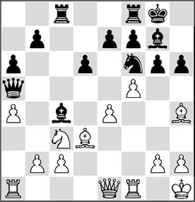
18.♘d5!
The start of a liquidation with which White achieves a big positional advantage.
18…♕xe1
After 18…♕d8 19.♗xf6! ♗xf6 20.fxg6 (less good is 20.♘xf6+, as Black has nothing to fear after 20…exf6 21.♗xc4 ♖xc4) 20…fxg6 21.♕g3, White obtains a dangerous initiative. For example: 21…♔h7 22.e5!.
19.♘xe7+ ♔h7 20.♖axe1
Probably, taking back with the other rook (20.♖fxe1) would have been better here, since after 20…♖c7 the position contains a tactical trick: 21.e5! and White takes control.
20…♖c7 21.♗xc4 ♖xc4
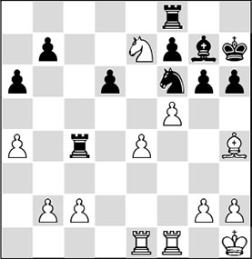
22.♗xf6! ♗xf6 23.fxg6+ fxg6 24.♘d5 ♗g7 25.♖xf8 ♗xf8 26.c3 ♖xa4
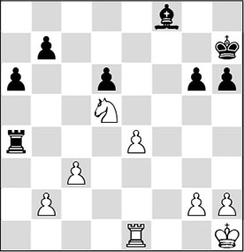
At first sight White has achieved nothing. But appearances are deceptive!
27.♔g1
The king is activated. When it makes an appearance on the queenside, the extent of Black’s problems will become clear.
27…♗g7 28.♔f2 b5 29.♔e3 a5 30.♔d3 b4
An attempt to free his rook, but Black saddles himself with a quite weak pawn with this move. After the somewhat more tenacious 30…♗e5, Black would eventually also experience problems with his rather boxed-in rook on a4.
31.cxb4 axb4 32.♔c2 ♗d4
32…♖a2 33.♖b1 does not help either.
33.♔b3 ♖a8 34.♖c1
The pawn on b4 is doomed, and White does not make haste to win it.
34…♔g7 35.♖c2
The intermediate move 35.♖c7+ was a little cleverer.
35…♔f7
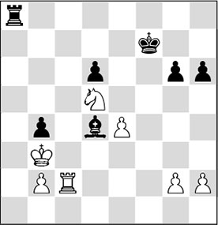
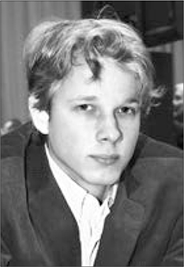
Jan Werle
36.♘xb4
Thanks to his superior strategy White has won an important pawn, after which the rest is technique.
36…♗e5 37.h3 ♔e6 38.♘d3 ♖b8+ 39.♔a4 ♗d4 40.b4!
This pawn has to do the job, and therefore it is pushed forward as quickly as possible.
40…♖b6 41.b5 g5 42.♔a5 ♖b7 43.♖c6 ♔d7 44.♘b4 ♖b8 45.♘d5 ♗c5 46.♖c7+ ♔d8 47.♔a6 h5
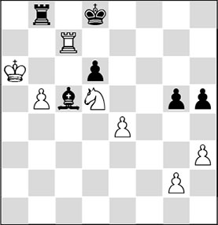
48.e5 ♖a8+ 49.♔b7 ♖a7+ 50.♔c6 dxe5 51.♔xc5 ♖xc7+ 52.♘xc7
1-0
This game was played at the Junior World Championship in Cannes, 1997. I trained Jan Werle when he was a young lad. Now he has surpassed me on all fronts, since he has developed into a very good grandmaster. What more does a trainer want? By the way, in the area of strategy I didn’t have to teach Jan a lot. He had his natural positional feeling, and his then trainer Babak Tondivar had given him excellent support to develop it further.
The question seems justified how a 14-year-old could produce such an almost flawless strategic game. I hope to answer this question further on in this book.
The second game is by the then 12-year-old Benjamin Bok during the U-14 Dutch Junior Championships in 2007.
RL 7.4 (C60)
1.e4 e5 2.♘f3 ♘c6 3.♗b5 g6 4.0-0 ♗g7 5.c3 a6 6.♗a4 d6 7.d4 ♗d7
In my training with Benjamin I had talked about good and bad bishops. With the help of positions arising from the French and the King’s Indian I talked about the strategy to exchange your bad bishop for your opponent’s good one. King’s Indian players know that in the Main Line especially, Black’s light-squared bishop is important in order to have a chance at success in the attack. With this knowledge in the back of his head, Benjamin opts for a clear strategic concept, displaying a good understanding of what he is doing.
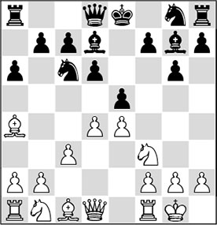
8.d5 ♘ce7 9.♗xd7+ ♕xd7 10.c4
Thus, White has created a kind of King’s Indian structure where he has already succeeded in exchanging the light-squared bishops.
10…♘f6
Now 10…f5 would not have been good in view of 11.♘g5!, and the knight occupies the unassailable square e6.
11.♘c3 0-0 12.♗g5! h6
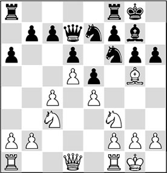
13.♗xf6
This curious exchange is the consequence of White’s previous move. White gives his beautiful bishop for a knight. This theme had also been a subject at our training sessions. In chess, what matters is always which pieces remain on the board. In this case, White possesses two knights against a knight and a bad bishop in a closed position. That is a highly favourable material balance.
13…♗xf6 14.b4
The funny thing is that this position was still known from a game Zidarov-Delchev, Varna 1995. But Benjamin had invented it all by himself. The above-mentioned game continued as follows: 14.♕d3 ♗g7 15.♘d2 f5 16.f3 h5 17.b4 ♗h6 18.♘b3 ♖f7 19.c5 ♔h7 20.a4.
14…b6 15.c5
Very straightforwardly and effectively played. The base of Black’s pawn chain must be attacked.
15…♗g7
15…bxc5 16.bxc5 dxc5 17.♘a4 would give White a pleasant little plus.
16.♘d2 f5 17.f3 ♖fc8?!
There is no employment for this rook on this wing. Probably Black had to capture twice on c5.
18.♕b3 ♔h7 19.♘c4 bxc5 20.bxc5 dxc5
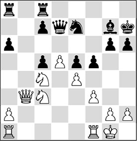
21.♕a3?!
White has a beautiful position, and he is also playing logical moves. With hindsight, though, 21.♘a4! would have been much better. The knight is much better on c5 than the queen. After 21…♕b5 22.♕c2 the black queen will be driven off, after which White plays ♘xc5, and he will invade on e6.
21…♖cb8 22.♖ab1 ♘c8 23.♕xc5 ♘d6
Black has defended quite craftily.
24.♘a5 fxe4 25.fxe4 ♖f8
Black realizes his mistake and tries to transfer play to the kingside.
26.♘c6
The white knight has settled down on a beautiful square, but for the time being it does not have much to do there. White would have done better by confining Black’s counterplay, since now the initiative passes on to the black player. Therefore, the prophylactic 26.h3 might have been more accurate.
26…♕g4 27.♕e3

27…♖f4!
Black is fighting back with all his might.
28.h3 ♕h4 29.♔h2 ♕g5 30.♖f3
The liquidation after 30.g3 ♖xf1 31.♕xg5 ♖xb1 would rather favour Black.
30…♖af8 31.♖bf1 h5
Another good move; the bishop will have a future on h6.
32.g3?!
Understandably, White wants to kick the annoying rook from f4, but this does not seem to be the right way. However, White’s position had already lost most of its lustre.
32…♖xf3 33.♖xf3 ♕xe3 34.♖xe3 ♖f2+ 35.♔g1 ♖b2
It’s a bit sad for White that the black rook has penetrated into his position, and that the ‘bad’ bishop will soon be ‘taking a look inside’.
36.♖f3
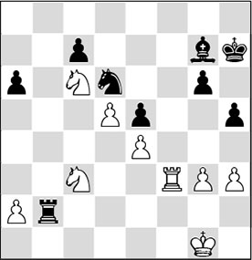
36…♔g8?!
Black does not continue actively enough. There were two possibilities for him to keep the position balanced: with the tactical 36…♗h6!? 37.♘xe5 ♗g7 38.♘d7 ♗d4+ 39.♔f1 ♗xc3 40.♖xc3 ♘xe4 41.♖xc7 ♔h6, Black breezes through to a draw. With 36…♖c2 he could have tied the white rook to the protection of the knight.
37.♖f2!
Well spotted. The rook must be driven off!
37…♖b7 38.♖e2 ♘b5?!
Black overplays his hand.
39.♖b2!
White would like to exchange rooks, as then he will end up in a favourable endgame of two good knights versus a passive black knight and a not-too-strong bishop.
39…♘d6 40.♖xb7 ♘xb7 41.♔f2
Slightly better was 41.♘a4.
41…♗f8
41…♘c5 would have limited the damage.
42.♔e2 ♗d6 43.♘a4 ♔g7
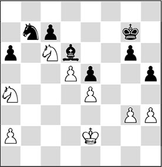
44.♘b8!
Excellently played: the pawn is forced to go to a square of the wrong colour, delivering more light squares into White’s hands.
44…a5 45.♘c6 ♔f6 46.♔f3 ♔g5 47.h4+!
Very good!
47…♔f6
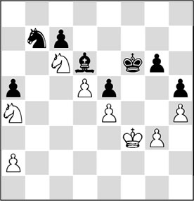
48.♘b2!
Zugzwang! Black cannot move a piece without losing a pawn.
48…♗b4 49.♘xb4 axb4 50.♘d3 ♘a5 51.♘xb4
An extra pawn in a knight ending has almost the same value as an extra pawn in a pawn ending.
51…♔e7

52.♘c6+!
The white player liquidates into a pawn ending. He has seen sharply that this is winning for him. The move 52.♔e2!? is for lazy players: 52…♔d6 53.♔d3 ♔c5 54.♔c3, and White also wins easily.
52…♘xc6 53.dxc6 ♔d6 54.♔e3 ♔xc6 55.♔d3
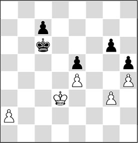
55…♔b5
The crucial variation goes: 55…♔c5 56.♔c3 ♔b5 57.♔b3 ♔c5 58.a4 ♔d4 59.a5 ♔c5 60.♔a4 c6 61.a6! ♔b6 62.♔b4 ♔xa6 63.♔c5 ♔b7 64.♔d6 ♔b6 65.♔xe5 and White wins, even though Black has the outside passed pawn. A possible follow-up is 65…♔c7
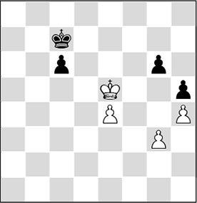
Analysis diagram
66.♔e6! and Black has no useful moves: 66…♔b6 (66…c5 67.♔d5) 67.e5 c5 68.♔d5 ♔b5 69.e6, and White queens first. Afterwards it turned out that Bok had not calculated everything. That would have been well-nigh impossible, but as so often his intuition did not deceive him – which is a sign of talent!
56.♔c3 ♔a4 57.♔c4
The rest is elementary.
57…♔a3 58.♔d5 ♔xa2 59.♔xe5 ♔b3 60.♔d5 ♔b4 61.♔c6 ♔c4 62.e5
1-0
Also here, the young player succeeded in putting this positional principle into practice. Unfortunately, in one phase of the game he did not manage to maintain his advantage, but as soon as the opponent made a mistake somewhere, he steered the game with a steady hand to a win at great speed. His handling of the endgame was impressive.
Benjamin Bok has become a strong grandmaster who was a member of the Dutch Olympiad Team in Baku, 2016.
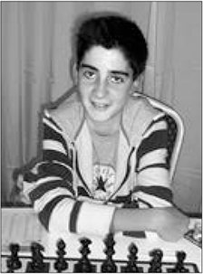
Benjamin Bok
1.7 Exercises
In this book, all the strategic elements are discussed in separate chapters, and illustrated with examples. At the end of each chapter where an element is discussed you will find a number of exercises, allowing you to test whether the material has come across. In the other chapters, an alternative way is given to dabble with ‘the elements’.
A small warning is in order here. Many exercises are quite tough. When you are searching for the solutions to the problems in a position, there is no getting round the fact that you will have to show a certain amount of knowledge and understanding in order to be able to draw the right conclusions. The important thing is that you spot the essence of the problem in the position and try to put this into words. This verbalization of the problems will help you reach a correct evaluation. And that is exactly how you will be able to improve your play!
If you have spotted the essential points in the exercises, you can be satisfied, because it will be impossible even for a grandmaster to foresee the entire range of events in a game. And if you don’t manage to work it all out, there is always the possibility of playing over the games in the Solutions chapter in the back of this book.